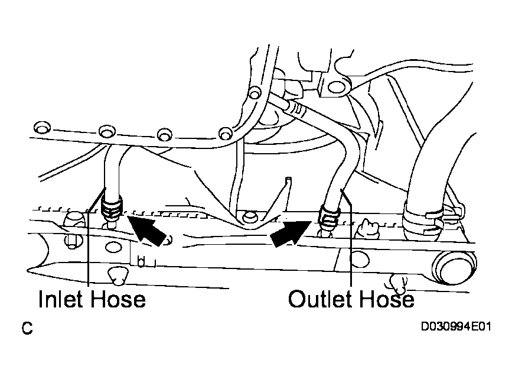

Automatic Transaxle Assembly: Removal
WARNING: This page is about a different variant/trim than selected.
- REMOVE HOOD SUB-ASSEMBLY
- REMOVE BATTERY NOTE: Wait at least 90 seconds after disconnecting the cable from the negative (-) battery terminal to prevent airbag and seat belt pretensioner activation.
- REMOVE WINDSHIELD WIPER LINK ASSEMBLY
- Remove the windshield wiper link (see REMOVAL ).
- REMOVE COWL TOP PANEL OUTER
- REMOVE NO. 2 CYLINDER HEAD COVER
- REMOVE AIR CLEANER ASSEMBLY
- Remove air cleaner (see REMOVAL ).
- REMOVE AIR CLEANER BRACKET
- Disconnect the wire harness clamp.
- Remove the 2 bolts, air cleaner bracket and transmission control cable support.
- DISCONNECT TRANSMISSION CONTROL CABLE ASSEMBLY
- Remove the nut from the control shaft lever.
- Disconnect the control cable from the control shaft lever.
- Remove the clip and disconnect the control cable from the control cable bracket.
- REMOVE NO. 1 TRANSMISSION CONTROL CABLE BRACKET
- Remove the 2 bolts and bracket.
- DISCONNECT WIRE HARNESS
- Remove the bolt and disconnect the wire harness clamp bracket.
- DISCONNECT CONNECTOR
- Disconnect the transmission wire connector.
- Disconnect the park/neutral position switch connector.
- Disconnect the transmission revolution sensor connector.
- REMOVE FRONT WHEEL
- REMOVE ENGINE UNDER COVER RH
- REMOVE ENGINE UNDER COVER LH
- REMOVE FRONT EXHAUST PIPE ASSEMBLY
- Remove the front exhaust pipe (see REMOVAL ).
- DRAIN AUTOMATIC TRANSAXLE FLUID
- Remove the drain plug and gasket, and drain ATF.
- Install a new gasket and the drain plug.
- REMOVE FRONT DRIVE SHAFT ASSEMBLY RH
- Remove the front drive shaft (see REMOVAL ).
- REMOVE FRONT DRIVE SHAFT ASSEMBLY LH
- Remove the front drive shaft (see REMOVAL ).
- DISCONNECT OIL COOLER HOSE
- Using pliers, grip the claws of the 2 clips and disconnect the oil cooler hoses (inlet and outlet).

Courtesy of © TOYOTA, LICENSE AGREEMENT TMS1002HINT:
Use a container to catch the fluid.
- Using pliers, grip the claws of the 2 clips and disconnect the oil cooler hoses (inlet and outlet).
- SUSPEND ENGINE ASSEMBLY
- Install the engine hangers with the bolts in the correct direction.
Engine hanger: Part No. 12281-21010
Bolt: Part No. 91642-81025
Torque: 40 N*m (408 kgf*cm, 30 ft.*lbf)
- Attach the engine chain hoist to the engine hangers.NOTE: Do not attempt to hang the engine by hooking the chain to any other parts.
- Install the engine hangers with the bolts in the correct direction.
- REMOVE DRIVE SHAFT HEAT INSULATOR SUBASSEMBLY
- Remove the 3 bolts and drive shaft heat insulator.
- REMOVE STARTER ASSEMBLY
- Remove the flywheel housing side cover.
- Remove the nut and disconnect the starter wire.
- Disconnect the connector.
- Remove the 2 bolts and starter.
- SUPPORT AUTOMATIC TRANSAXLE ASSEMBLY
- Support the automatic transaxle with a transmission jack.
- DISCONNECT ENGINE MOUNTING BRACKET LH
- Remove the bolt and ground cable from the engine mounting bracket.
- Remove the 2 bolts and disconnect the engine mounting bracket from the engine mounting insulator.
- DISCONNECT ENGINE MOUNTING INSULATOR REAR
- Remove the bolt and nut, and disconnect the engine mounting insulator rear from the engine mounting bracket.
- REMOVE FRONT SUSPENSION CROSSMEMBER SUB-ASSEMBLY
- Remove the front suspension crossmember (see REMOVAL ).
- REMOVE ENGINE MOUNTING BRACKET REAR
- Remove the 3 bolts and engine mounting bracket from the automatic transaxle.
- REMOVE FLYWHEEL HOUSING UNDER COVER
- Remove the flywheel housing under cover.
- REMOVE AUTOMATIC TRANSAXLE ASSEMBLY
- Turn the crankshaft to gain access and remove the 6 torque converter mounting bolts while holding the crankshaft pulley bolt with a wrench.
HINT:
There will be one white colored bolt.
- Remove the 7 bolts.
- Remove the automatic transaxle from the engine.
- Turn the crankshaft to gain access and remove the 6 torque converter mounting bolts while holding the crankshaft pulley bolt with a wrench.
- DISCONNECT NO. 1 OIL COOLER INLET TUBE
- Using SST, disconnect the oil cooler inlet tube.
SST 09023-12701
- Using SST, disconnect the oil cooler inlet tube.
- DISCONNECT NO. 1 OIL COOLER OUTLET TUBE
- Using SST, disconnect the oil cooler outlet tube.
SST 09023-12701
- Using SST, disconnect the oil cooler outlet tube.
- REMOVE ENGINE MOUNTING BRACKET LH
- Remove the 3 bolts and engine mounting bracket from the automatic transaxle.
- REMOVE TRANSMISSION OIL FILLER TUBE SUBASSEMBLY
- REMOVE TORQUE CONVERTER CLUTCH ASSEMBLY
- Remove the torque converter clutch from the automatic transaxle.